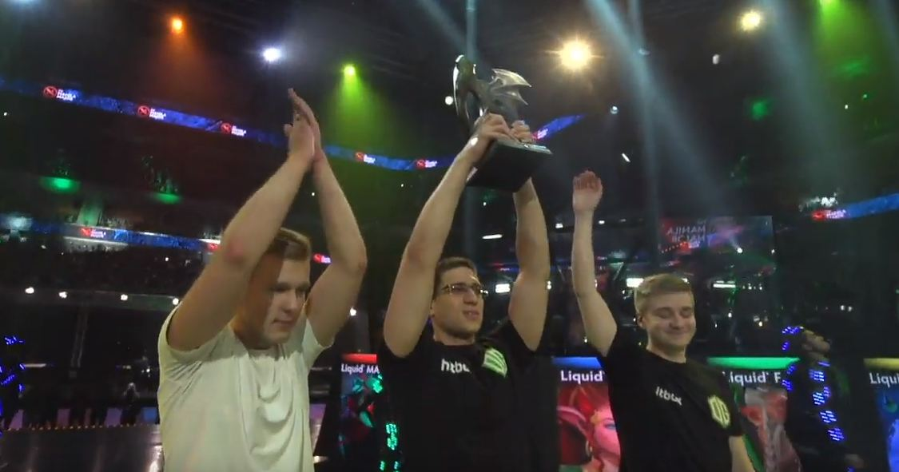

Pertama dalam sejarah Dota2! OG berhasil memenangkan 3 Majors

Pertama dalam sejarah Dota2! OG berhasil memenangkan 3 Majors
OG menjadi tim pertama yang berhasil meraih 3 gelar majors. 3 Majors yang berhasil diraih adalah Frankfurt Major pada tahun 2015, Shanghai Major pada 2016 dan Boston Major di 2016. Tim OG beranggotakan
- Johan'N0tail'Sundstein
- Anathan'ana'Pham
- Gustav's4'Magnusson
- Jesse'jeraX'Vainikka
- Tal'Fly'Aizik
Tim ini berhasil mencatatkan rekor sementara sebagai pemegang Gelar Major terbanyak. Well Selamat OG!
Kembali ke list berita